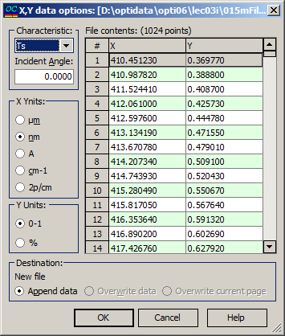

Import X,Y data
This option is useful when it is necessary to import simple ASCII two-column files. Usually, the first column is the wavelength (or wavenumber), while the second column is some characteristic (such as Reflectance, Transmittance, etc.).

Use the Import X, Y data options dialog box to specify the type of the measured characteristic and the units for the X and Y columns. For convenience, the data extracted from the current file are displayed on the right side of the dialog box.
The File contents box allows for scrolling through the content of the imported file. The X column displays the wavelength grid, and the user should select an appropriate wavelength unit in the field labeled X-Units. The Y column presents one of the six possible spectral characteristics: Ts, Tp, Ta, Rs, Rp, Ra, BRs, BRp, BRa. The user must select the proper characteristic in the Characteristic field. The range (0-1 or 0-100%) should also be specified in the Y-Units field. Additionally, the Incident Angle can be specified as well.
In the Destination field, the name of the data file being edited and the corresponding destination page are displayed. Users can choose to append data, overwrite the existing data in the current file, or overwrite only the current page within the file.
When the OK button is pressed, the content of the destination file will be replaced with the content of the X,Y data file. If the number of rows in the source file exceeds the number of rows in the destination page, additional destination pages will be automatically created, and the extra data will be written to these new pages.